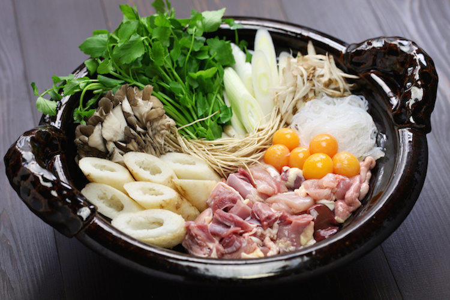

Japan is no stranger to skewered food—yakitori, kushikatsu, dango and charcoal-grilled squid are just a few examples. Akita prefecture kiritanpo is another one to add to this list. Kiritanpo are skewers of freshly cooked rice that have been pounded, formed into cylinders, wrapped around cedar skewers and then toasted over an open fire. You can eat the skewers as is with a sweet miso sauce, or cut up and cooked in a stew of vegetables and chicken. Kiritanpo started out as a portable meal for woodcutters and hunters working in the mountains, but you don’t have to be an outdoorsy person to enjoy it! Peak season for kiritanpo eating is during mid-September to March, and restaurants serving kiritanpo hotpots can be found throughout Akita prefecture.

This is a video to let you learn more about Kiritanpo